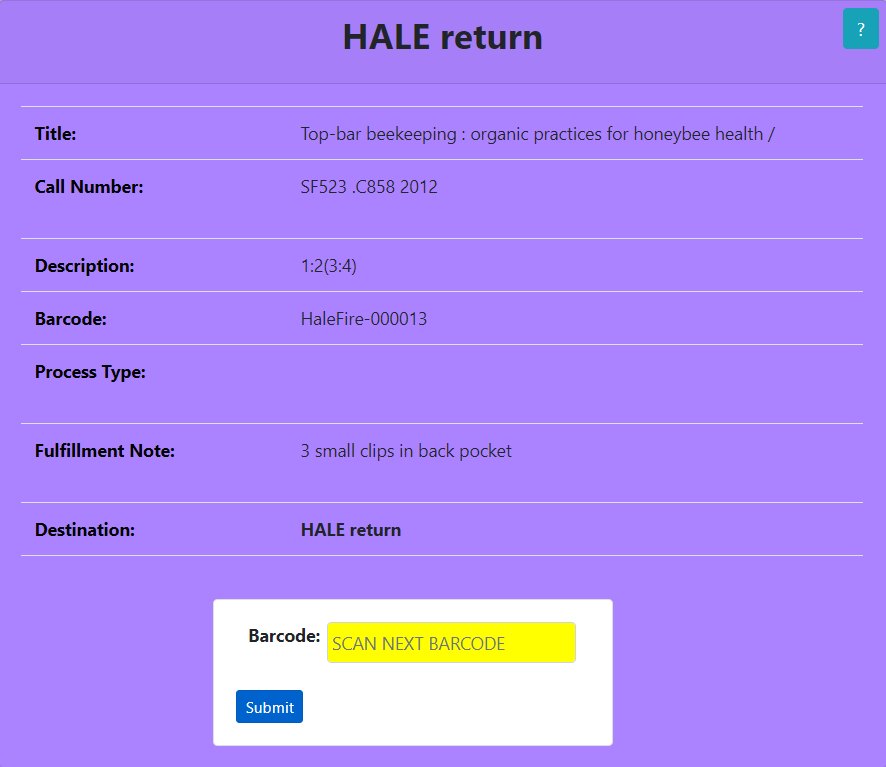
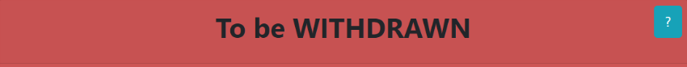

This application facilitates the Unboxing Workflow by providing you with important information. It provides you with the physical item's Title, Call Number, Description, Barcode, Location, Process Type, Fulfillment Note, and its final Destination. The application is color coded to provide a stimulated eye response, so please review the color code table below. After scanning your first barcode, you will be able to scan your next barcode from the results page. If you have any questions please do not hesitate to ask Library Staff.
The first form asks for you to scan a barcode. This barcode can be scanned with the barcode scanner or by being typed in. When you have located the barcode on the physical piece, enter that barcode into the form:
If the barcode does not exist within the system you will get an error. Check the physical piece for other barocdes and if they all return the following error, place the physical item on the Problem Shelf:

The next form will display the Unboxed physical item information. The Destination will display at the top of the page followed by Title, Call Number, Description, Barcode, Location, Process Type, Fulfillment Note, and theDestination again. The background color of the form is related to the physical item's destination. Please review the color code table below. If the Process Type row has a background color of red place the physical item on the Problem Shelf, ignoring the stated destination. If the Fulfillment Note row has a background color of red place the physical item on the Problem Shelf, ignoring the stated destination:

When ready, you can scan the next barcode using the form at the bottom of the page:

| Destination | Description |
|---|---|
 |
Place physical item on HALE return shelves |
| Place physical item on ANNEX ingest shelves | |
|  | Place physical item on To be WITHDRAWN shelves |
 |
Place physical item on Problem Shelf |
 |
Place physical item on Problem Shelf |
 |
Place physical item on Problem Shelf |
 created with the free version of
Markdown Monster
created with the free version of
Markdown Monster